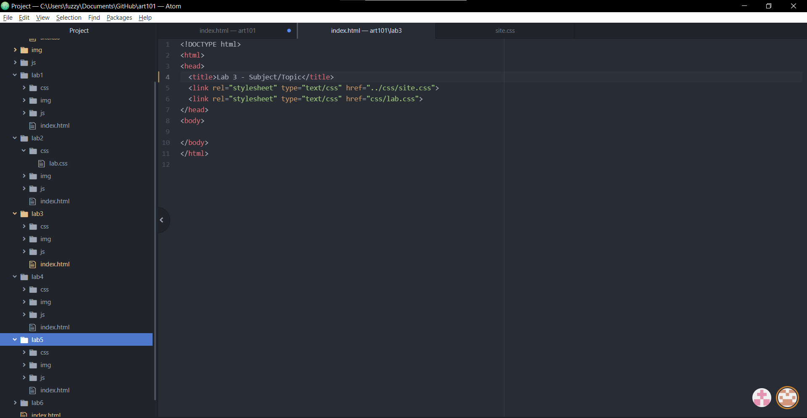
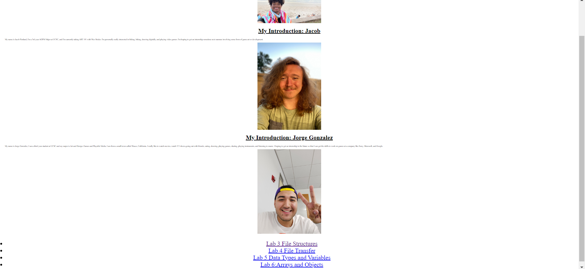
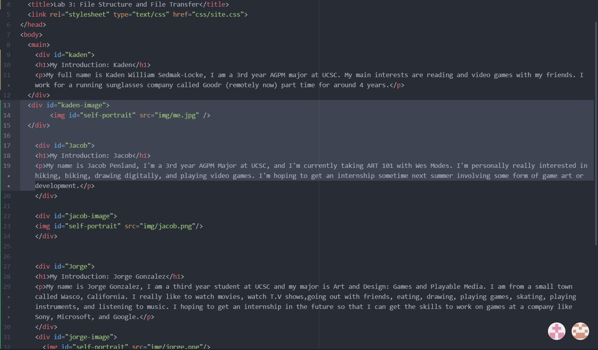
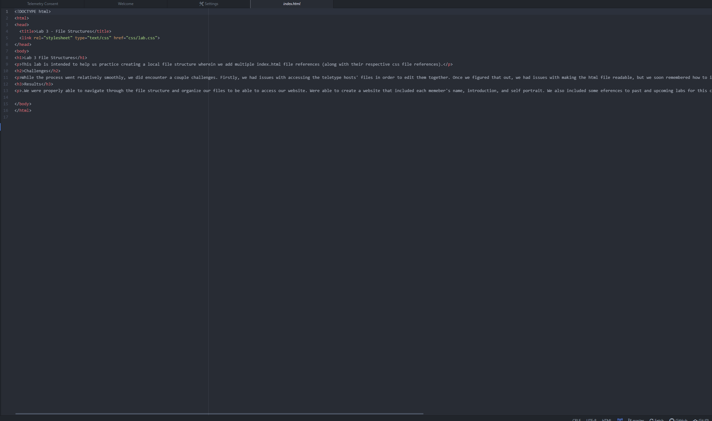
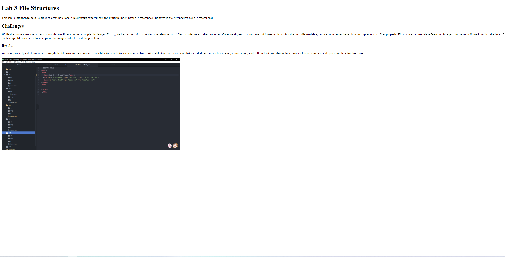

This lab is intended to help us practice creating a local file structure wherein we add multiple index.html file references (along with their respective css file references).
While the process went relatively smoothly, we did encounter a couple challenges. Firstly, we had issues with accessing the teletype hosts' files in order to edit them together. Once we figured that out, we had issues with making the html file readable, but we soon remembered how to implement css files properly. Finally, we had trouble referencing images, but we soon figured out that the host of the teletype files needed a local copy of the images, which fixed the problem.
We were properly able to navigate through the file structure and organize our files to be able to access our website. Were able to create a website that included each memeber's name, introduction, and self portrait. We also included some eferences to past and upcoming labs for this class.
    